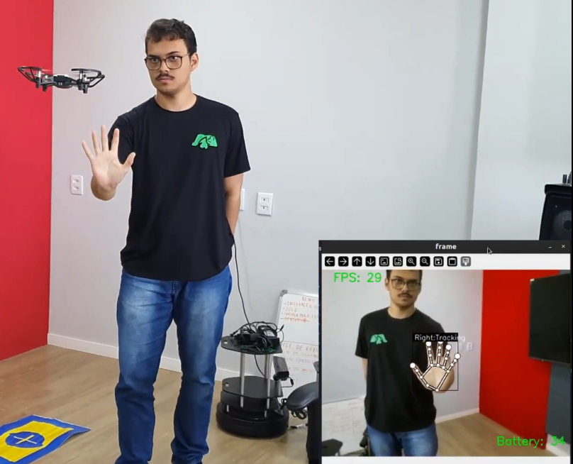
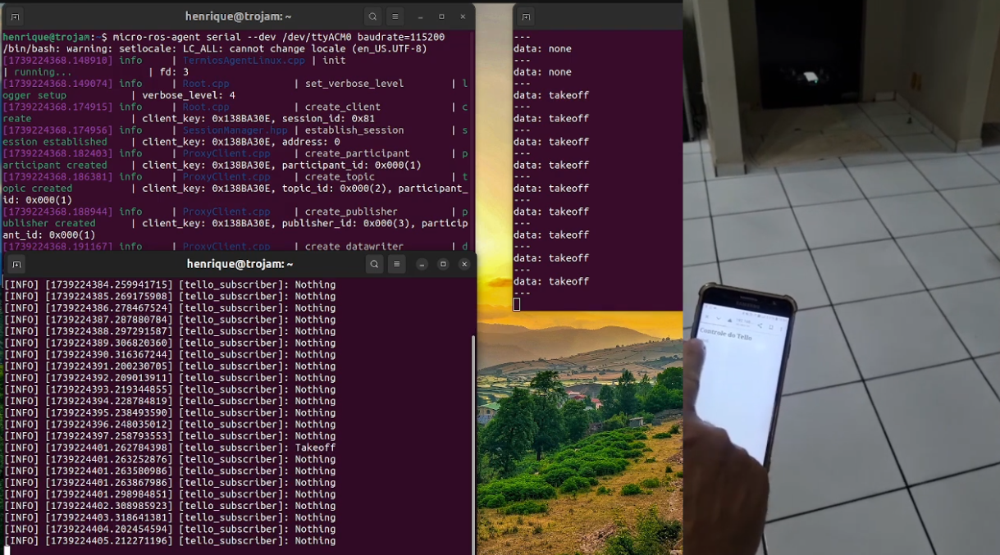
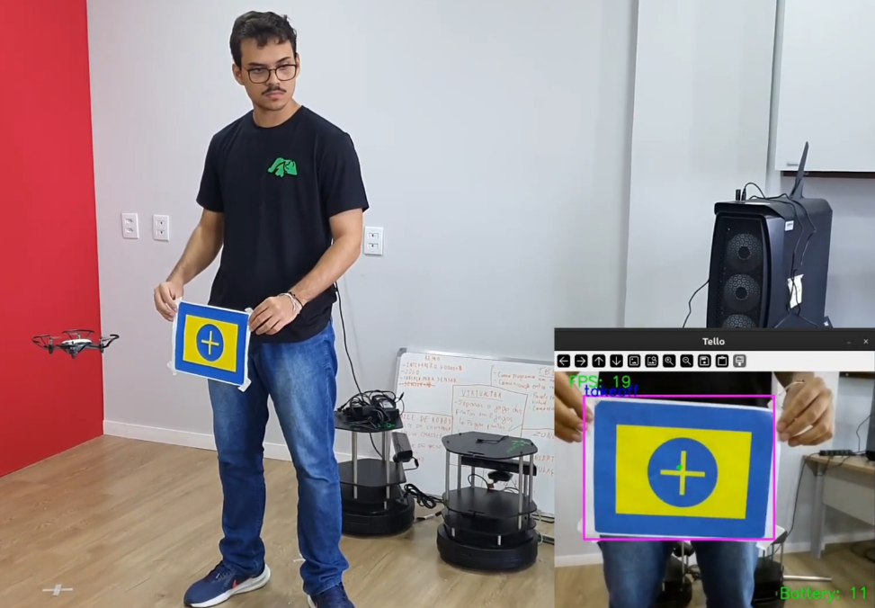
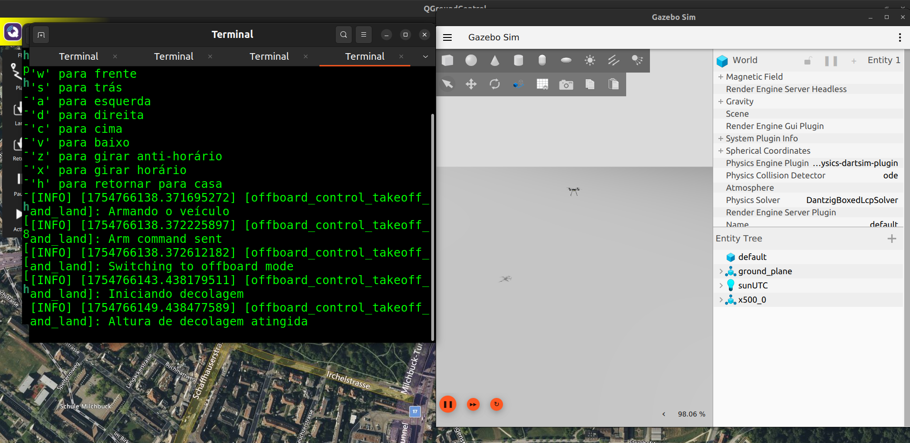
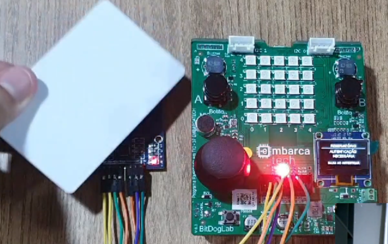
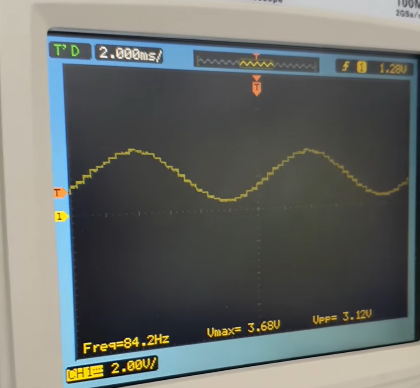
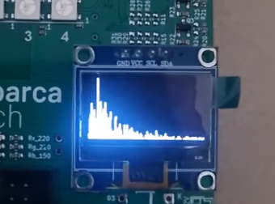
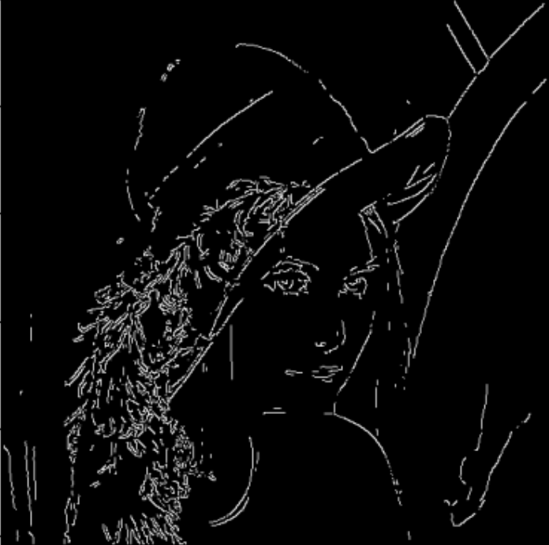

Drone-Based Object Tracking with Convolutional Neural Networks
Authors: Ramon Souza, Henrique Corneau, Murilo Barros, Vinícius Silva, César Melo, Helton Maia
Ano: 2024
Read PublicationCalculating the global coordinates of detected objects by fusing data from YOLO, a stereo camera, an IMU, and GPS.
Real-Time Hand Gesture Detection for Drone Control.
HTTP-to-ROS2 Bridge for DJI Tello Drone Control Using a Raspberry Pi Pico.
Real-Time Object Tracking with a Drone Using PID Control and YOLO.

An Arduino-based drone using AVR-C and FreeRTOS, controlled by a radio control (RC) transmitter.
Controlling a simulated drone with a keyboard using ROS2 and Gazebo.
Real-Time Water Management System using Raspberry Pi Pico W and RFID.
An Arduino-based signal generator developed in AVR-C running on the FreeRTOS operating system.
Real-Time Audio Spectrum Analyzer using Raspberry Pi Pico W and FFT.

A motion detector system using an ESP32 and a mini Passive Infrared (PIR) sensor.
A repository containing robotic vision activities, with computer vision techniques implemented from scratch.
Authors: Ramon Souza, Henrique Corneau, Murilo Barros, Vinícius Silva, César Melo, Helton Maia
Ano: 2024
Read PublicationAuthors: Henrique Corneau, Ramon Souza, João Victor de Andrade, Bruno Silva.
Ano: 2025
Read PublicationHello, my name is Henrique Corneau, and I am a mechatronics engineering student at the Universidade Federal do Rio Grande do Norte (UFRN). I am passionate about robotics, embedded systems, and computer vision. During my undergraduate studies, I founded a robotics team focused on autonomous drones. Our team built these drones from scratch and programmed them for autonomous tasks using AI and computer vision. I also have experience as a researcher on a computer vision project. This role involved applying these techniques to a sailboat, fusing data to estimate the global coordinates of detected objects. Furthermore, I participated in EMBARCATECH, a technology residency program with public and private sponsorship. In this program, our team developed embedded solutions for corporate clients.